Presentado a la Candidatura a la Alcaldía de Loja
¿Qué sucede cuando un ciudadano intenta realizar un trámite en el Municipio de Loja?
El ciudadano recorre Registro de la Propiedad, Bomberos y Municipio. A los 11 días de espera le notifican una corrección documental y debe reiniciar el circuito.
El ciudadano (o su arquitecto) recorre 7 entidades entre el Registro de la Propiedad, UMAPAL, EERSSA, Bomberos y la Notaría, recopilando certificados en papel antes de que el Municipio apruebe los planos y emita el permiso. Mientras el expediente espera, el certificado del Registro de la Propiedad se vence y debe reiniciar ese paso.
¿Qué sucede cuando un ciudadano hace uso del SIMERT?
Así vive hoy el ciudadano de Loja el SIMERT: un recorrido manual, fragmentado y con alto riesgo de multa.
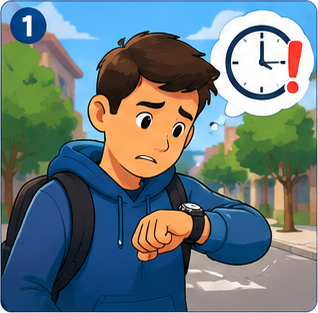
Mira el reloj. Necesita parquear ahora.
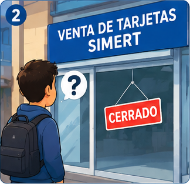
El punto de venta de tarjetas está cerrado.
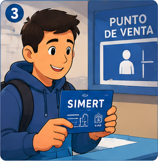
Finalmente consigue una tarjeta física.
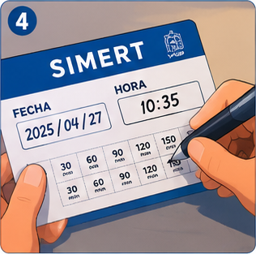
La llena a mano: fecha, hora y minutos.
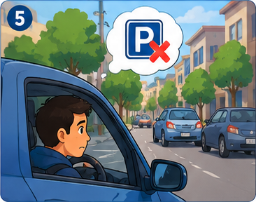
Busca plaza y no hay información disponible.
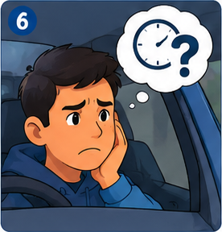
No sabe cuánto tiempo le queda.
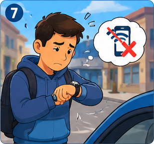
No existe app ni recarga digital.
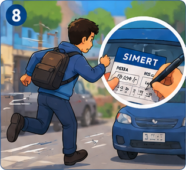
Corre de vuelta al vehículo a colocar la tarjeta.
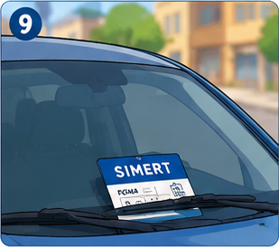
Deja la tarjeta en el parabrisas.
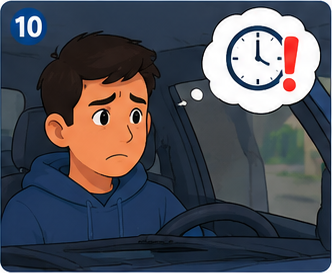
El tiempo se agota y no puede ampliarlo fácil.
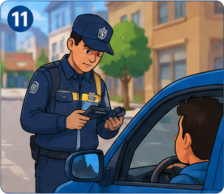
Un agente inspecciona el vehículo.
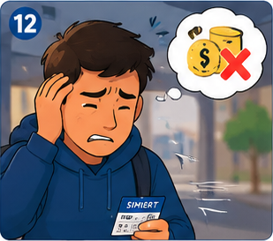
Termina con multa y un costo extra.
¿A qué hora del día hay un aumento fuerte de pasajeros (hora pico de 7 am o media tarde)?
¿En qué parada sube la mayor cantidad de gente?
¿Cuántas personas viajaron realmente en cada bus en un momento dado (ocupación real vs. capacidad)?
¿En qué ruta específica se usó cada pasaje (la que va al mercado mayorista o la que va a la Nacional)?
¿Qué sucede con las personas que llegan por primera vez a Loja, se quedan por un lapso corto de tiempo y quieren hacer uso del transporte público?
Es la diferencia entre saber "vendimos 50.000 dólares en pasajes este mes" y saber "el bus de la ruta 4 va sobrecargado todos los días entre 6:45 y 7:15 am, mientras el de la ruta 7 casi siempre circula medio vacío a esa misma hora". La primera cifra es útil para contabilidad; la segunda es la que permite tomar decisiones operativas.
¿Existe transparencia y control ciudadano sobre la gestión municipal (presupuesto, obras, contrataciones)?
Un modelo de gestión donde el ciudadano tiene un solo punto de contacto con el Municipio, eliminando la burocracia entre dependencias.
El ciudadano no debe ser el "mensajero" del municipio. El sistema se conecta automáticamente con:
Inspirado en sistemas de transporte de ciudades inteligentes europeas:
Plataforma donde la información pública se publica en formatos reutilizables y comprensibles para todos.
"El futuro digital de Loja empieza con una decisión de liderazgo."
¡Muchas Gracias!